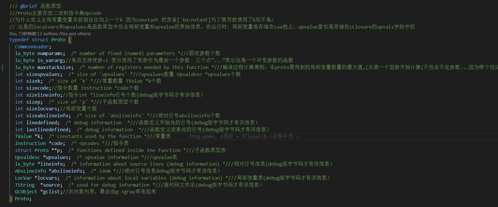
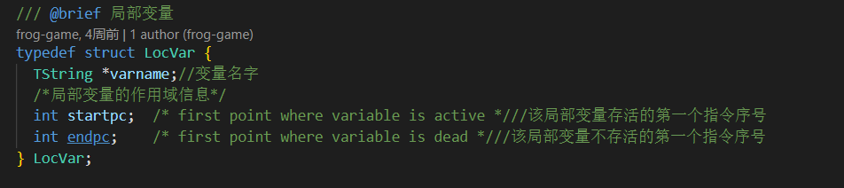
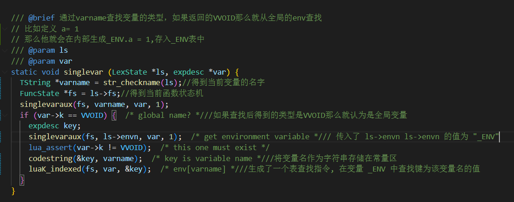
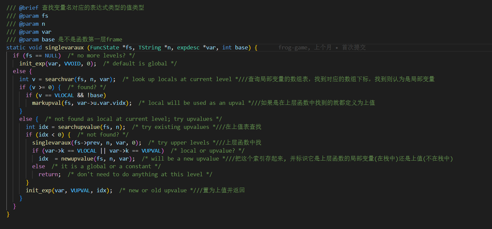
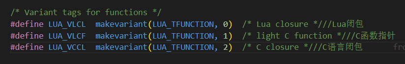
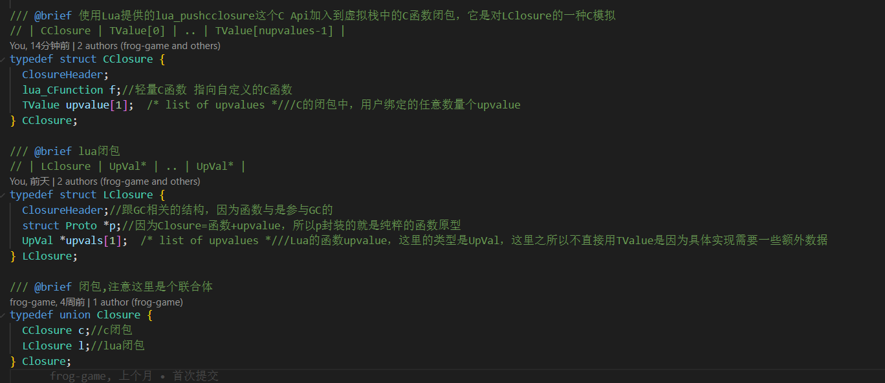
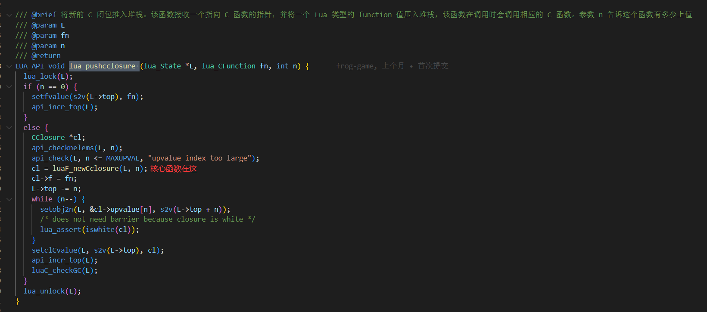
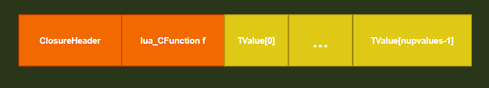
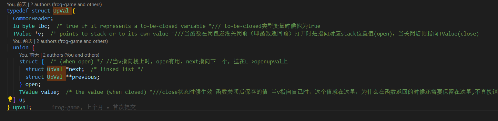
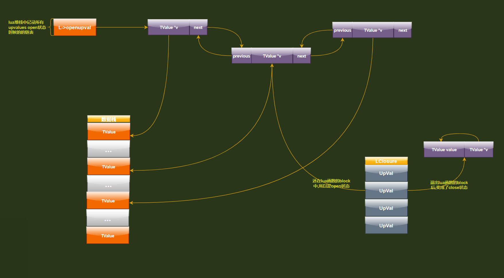

函数原型

-
上面
proto的大部分参数来源是lcode.c,ldump.c,llex.c,lparser.c,lundumpc这几个文件赋予的 -
locvars在这里并不指实际的局部变量,实际的局部变量存在数据栈中,存的只是也写解析lua文件以后的一些数据 -
upvalues也不是指upvalues变量,而实际存储他们的位置在CClosure->upvalue和LClosure->upvals中 -
numparams表示函数有几个参数，is_vararg表示参数是否为可变参数列表,例如这个函数声明function f1(a1, a2, ...) ...... end三个点
…表示这是一个可变参数的函数。f1()在这里的numparams为2，并且is_vararg的值为1。 -
maxstacksize字段 编译过程计算得到代表本proto需用到的局部变量数量的最大值,从第一个型参开始计算(不包含不定参数...因为哪个没法知道确切的数量 实际调用时传给不定参数...的实参在L->func---->L->base之间,数量在OP_VARARG指令中已给出计算公式
变量

局部变量,全局变量,上值其实在编译期就知道结果了主要是通过下面singlevar和singlevaraux两个函数确定

总结:
局部变量存在数据栈中上值存在CClosure->upvalue和LClosure->upvals中全局变量存在_ENV中- 在
Lua中，函数参数也是局部变量
lua函数种类

从lua的源码中我们可以看出lua一共分为3种
| 宏 | 类型 | 注解 |
|---|---|---|
LUA_VLCL |
Lua闭包 |
用lua脚本写的函数。有上值，运行时需要闭包LClosure，函数原型Proto |
LUA_VLCF |
C函数指针 |
用C写，没有上值。运行时不须要闭包，函数原型lua_CFunction |
LUA_VCCL |
C语言闭包 |
用C写，有上值。运行时需要闭包CClosure，函数原型lua_CFunction |
闭包

C闭包
Lua在执行到fucntion ... end表达式或者c层调用lua_pushcclosure

会创建一个函数对象,内存布局如下

lua闭包
lua闭包和C闭包不太一样它的动态内容里面不是Tvalue类型而是UpVal类型,为啥要这样类型呢,主要还是因为Lua层的代码需要更多的信息处理,比如不同函数层次的调用,函数return之后上值的处理,UpVal还提供还原函数和子函数之间共享数据的方法

内存布局如下
upvalue 提供一种闭包之间共享数据的方法
UpVal有两种状态open状态 和close状态

open状态:还在lua函数的block中,所以是open状态,并且放入L->openupval链表当中,同时TValue *v指针指向数据栈数据的位置close状态:退出lua函数的block后,变成了close状态,并且放入L->openupval链表当中,同时TValue *v指针指向TValue value成员,也就是存放close值得地方